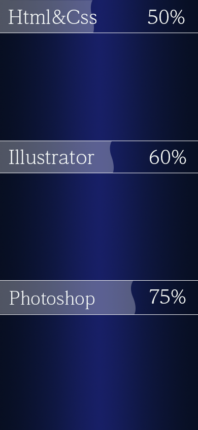

Html&Css
- 【学習方法】Progate、テキスト、コードの写経
- 【学習期間】１年３カ月
- 【今のレベル】基本的な知識は習得しており、
簡易的なポートフォリオサイトなど製作可能。
- 【目指すレベル】JavaScriptを習得して動きのある
Webサイトを作成したり、自分のデザインを生か
せるようなコーディング技術を身に着けること。
- 【学習方法】Progate、テキスト、コードの写経
- 【学習期間】１年３カ月
- 【今のレベル】基本的な知識は習得しており、簡易的なポートフォリオサイトなど製作可能。
- 【目指すレベル】JavaScriptを習得して動きのあるWebサイトを作成したり、自分のデザインを生かせるようなコーディング技術を身に着けること。
Illustrator&Photoshop
- 【学習方法】テキスト、デザイン模写（トレース）、
動画やサイトで独学
- 【学習期間】１年３カ月
- 【今のレベル】Illustratorはロゴ作成などで使用経験あり。
Photoshopではポスターやロゴ、バナーなどを製作可能。
どちらも基本的な知識は習得済み。
- 【目指すレベル】Illustratorは使用経験を増やし、デザイン
全体の完成度を上げること。Photoshopは画像加工などの
ツールの習熟度を上げ、デザインの幅を広げること。
- 【学習方法】テキスト、デザイン模写（トレース）、
動画やサイトで独学
- 【学習期間】１年３カ月
- 【今のレベル】ロゴ作成などで使用経験あり。基本的な
知識は習得済み。
- 【目指すレベル】使用経験を増やし、デザイン全体の
完成度を上げること。
- 【学習方法】テキスト、デザイン模写（トレース）、
動画やサイトで独学
- 【学習期間】１年３カ月
- 【今のレベル】ポスターやバナーなどを製作可能。
- 【目指すレベル】Photoshopは画像加工などのツールの
習熟度を上げ、デザインの幅を広げること。